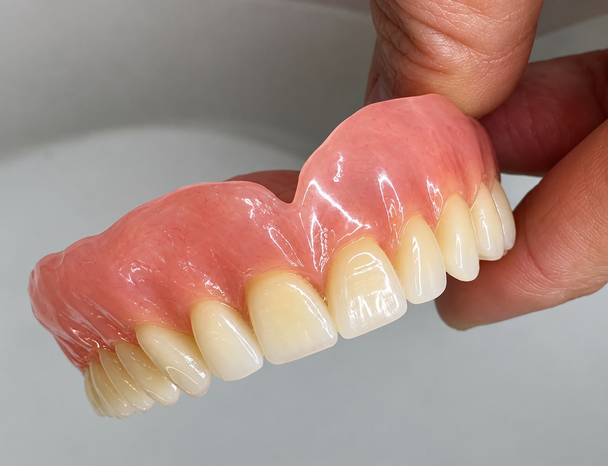

Prothèse complète en résine
Vue vestibulaire · finition et polissage
Dernier laboratoire · Begon
Je suis Nihad Hamrelgroun, technicienne dentaire basée à Lausanne. Mon travail associe prothèses en résine, modelage et conception numérique sur exocad.
Disponible immédiatement · Mobile · Permis de conduire

Des pièces réalisées dans mon dernier laboratoire aux exercices de formation en institut. Chaque photographie précise la technique et le contexte du travail.
Vue vestibulaire · finition et polissage
Résine et châssis métallique · vue sur modèle
Vue d’ensemble · modelé gingival
Conception sur exocad · vue d’une dent
Exocad · visualisation des arcades
Vue palatine · exercice de finition
Vue vestibulaire · travail de formation
Cire · travail sur modèles en plâtre
Bourrelet en cire · préparation sur modèle
Pièce et modèle · étapes de préparation
Éléments séparés · travail de formation
Expérience en département résine, sur des prothèses amovibles et fixes. Une attention particulière portée au modelé, aux finitions et au résultat prothétique.
Travaux de formation sur modèles : montages, maquettes et modelage en cire. Une pratique manuelle qui développe la précision et l’observation des formes.
Formation spécialisée en CAD/CAM à DentalCad Academy, complétée par une expérience de conception sur exocad en laboratoire.
Diplômée en prothèse dentaire en Espagne, je travaille de manière organisée et minutieuse. Je m’adapte rapidement et souhaite mettre mes compétences au service d’un laboratoire en Suisse.
Je poursuis également une formation en hygiène bucco-dentaire.
Prothésiste dentaire · Département résine
Prothèses amovibles et fixes, gestion des résultats prothétiques et expédition des travaux. Les trois photographies de laboratoire présentées dans la galerie proviennent de cette dernière expérience.
Prothésiste dentaire · Département résine
Travaux sur prothèses amovibles et fixes, conception sur exocad et gestion des résultats prothétiques.
Français : langue maternelle, en reprise. Espagnol et arabe : langues maternelles. Anglais : niveau conversationnel.
Basée à Lausanne, disponible immédiatement et ouverte à un déménagement. Permis de conduire et véhicule personnel.
Échangeons sur votre équipe et vos besoins en prothèse dentaire.